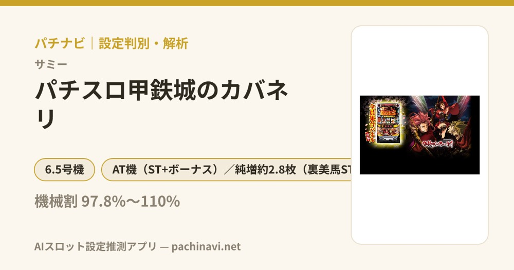

パチスロ甲鉄城のカバネリ
3つのチャンス目からCZ、そしてカバネリオブジアイアンフォートレスへ。
- 導入
- 2022
- メーカー
- サミー
- 分類
- パチスロ
主要スペック
6.5号機を代表するSTタイプ。ボーナスからST、無名回想を経由した上位STまでの流れを簡易抽選します。
- 3種類のチャンス目対応CZ
- ST初当り（設定1）約1/407.9
- 上位ST『（裏）美馬ST』を搭載
パチスロ甲鉄城のカバネリの見どころと計算条件
6.5号機を代表するSTタイプ。ボーナスからST、無名回想を経由した上位STまでの流れを簡易抽選します。
甲鉄城のカバネリを数字で早分かり
初当りボーナスからカバネリST、裏美馬STまでの流れと、設定ごとの結果差を固定レートで比較できます。
ボーナス初当りとST初当りを分けて見る
ボーナス合算約1/157.1は複数の当選を含む合算値です。シミュレーターの最初の契機には、設定1のボーナス初当り約1/237.0を使用し、ST初当り約1/407.9とは分けて抽選します。
設定1〜6で公開されているボーナス初当り・ST初当りを個別に登録し、START時にランダム抽選された設定の数値を使います。
固定レートと結果の見方
50枚あたり33.0G、1,000円46枚貸し、5.2枚交換を固定条件として投資・収支目安を計算します。
無名回想、美馬決戦、裏美馬STは体験用に簡略化した固定抽選です。公開されていない設定差を推測して上乗せすることはありません。
平均Gと投資目安の計算
掲載するカバネリST初当り約1/407.9は設定1基準です。当サイトでは50枚あたり33G、1,000円46枚貸しの固定条件から、設定1基準の平均投資目安を約13,400円と計算します。
シミュレーターでは設定1〜6を均等抽選します。設定1〜6で公開されている初当り値を個別に使います。公開されていない特化ゾーン・上位到達率の設定差は加えません。 換金は5.2枚交換で固定し、結果とランキングに設定を表示します。
シミュレーション結果の見方
当るまで初当りボーナス・カバネリSTまでのゲーム数
設定設定1・2・3・4・5・6から抽選された今回の設定
上位到達美馬決戦と裏美馬STへの到達
最終収支差枚と5.2枚交換の収支目安
結果は自動で「マイ記録」に保存され、同じ機種を何回試したか、最高収支、勝率をあとから確認できます。
簡易シミュレーターについて
初当りボーナス・カバネリST・裏美馬STの流れを固定条件で体験できます。JavaScriptを有効にすると、この位置にシミュレーター、演出、マイ記録、機種別ランキングが表示されます。
結果は娯楽・確率理解のための参考表示です。金銭的価値や交換価値はなく、実際の勝敗や収支を保証しません。18歳未満の方の利用はお控えください。
甲鉄城のカバネリのよくある質問
甲鉄城のカバネリはどんな台？
6.5号機を代表するSTタイプ。 3種類のチャンス目対応CZが主な確認ポイントです。
甲鉄城のカバネリの平均投資目安は？
設定1基準のカバネリST初当り約1/407.9と、50枚あたり33G・46枚貸しの固定条件から、平均13,400円を目安として表示します。実際の設定や遊技状況で結果は変わります。
設定とゲームの流れはどう抽選する？
開始時に設定1・2・3・4・5・6から1つを均等抽選し、初当りボーナス、カバネリST、美馬決戦、裏美馬STの順で到達を判定します。設定は最終結果とランキングに表示します。
収支はどう計算する？
1,000円46枚貸し・5.2枚交換の固定条件で投資、換金、収支目安を計算します。実店舗の再プレイ、持ちメダル、端数処理は含みません。